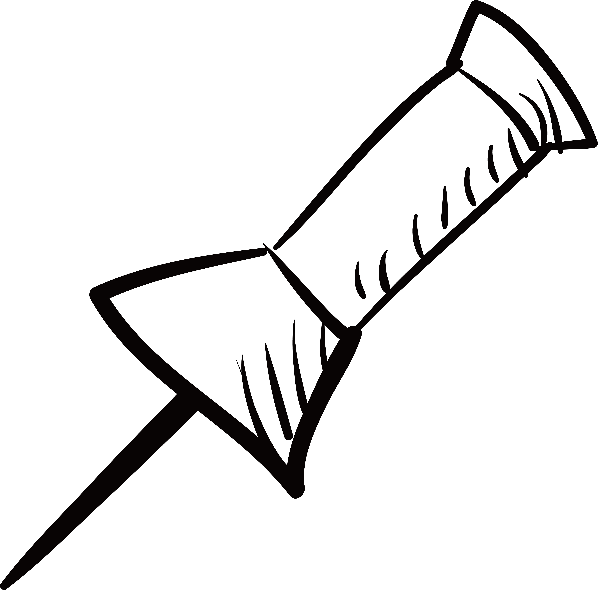

Or Use Your Keyboard!
For non-mouse users, having the ability to navigate via keyboard is an important accessibility feature. Drag the note card OR use tab to focus on it. Once focused, use AWSD to move it around the screen.
For non-mouse users, having the ability to navigate via keyboard is an important accessibility feature. Drag the note card OR use tab to focus on it. Once focused, use AWSD to move it around the screen.

Drag, resize, or focus on me!